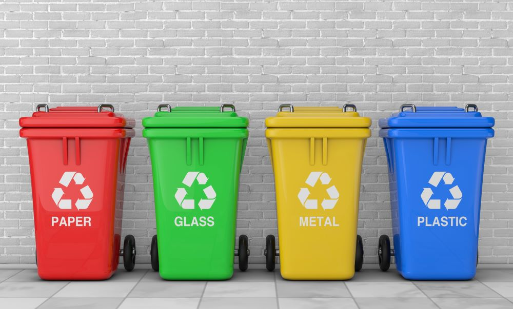

A Guide to Recycling for Beginners
Recycling is an easy, individual change you can make to help save the environment. If your neighborhood does not provide single-stream, curbside recycling, the first step is to find the nearest recycling center or recycling drop-off.
Below you will find the most common recyclables and how to recycle them. Keep in mind that each recycling center will vary in the types of materials they accept, and how they would like the recyclables to be prepped, so it is important to also research the specific recycling center you go to. You can start by finding their website or calling ahead.
Most plastic items will have a label on it. It is a recycling symbol with a number inside. The most commonly recycled plastics are #1 and #2, while #3-#7 are often not recycled. Check with you local recycling center to see which plastics they accept.
#1 plastic is very common and is commonly seen in items such water bottles or soda bottles. It is usually translucent. Before recycling, make sure the bottles are thrououghly rinsed. Some recycling centers require caps to be left on while others require caps to be taken off before recycling.
Examples of #2 plastic includes milk jugs, detergent bottles, and shampoo bottles. Similarly to #1 plastic, make sure these containers are rinsed before recycling, and check what should be done with the caps at your recycling center.
Most cardboard is easily recycled. If you have a box, make sure to flatten it and to take off any plastic tape or shipping labels. Paper tape/labels are usually ok.
Glass is very easy to reuse. Jars and bottles can be repurposed in many ways over and over. But if you have to get rid of glass, try to recycle it. If you do recycle your glass make sure it is thourougly rinsed out. Not all cities accept glass recycling, so check your localtiy. Also find out if colored glass is accepted, or only clear.
Here are some other items that are not commonly known to be recyclable. As always, not every recycling center will accept everything, so check beforehand.